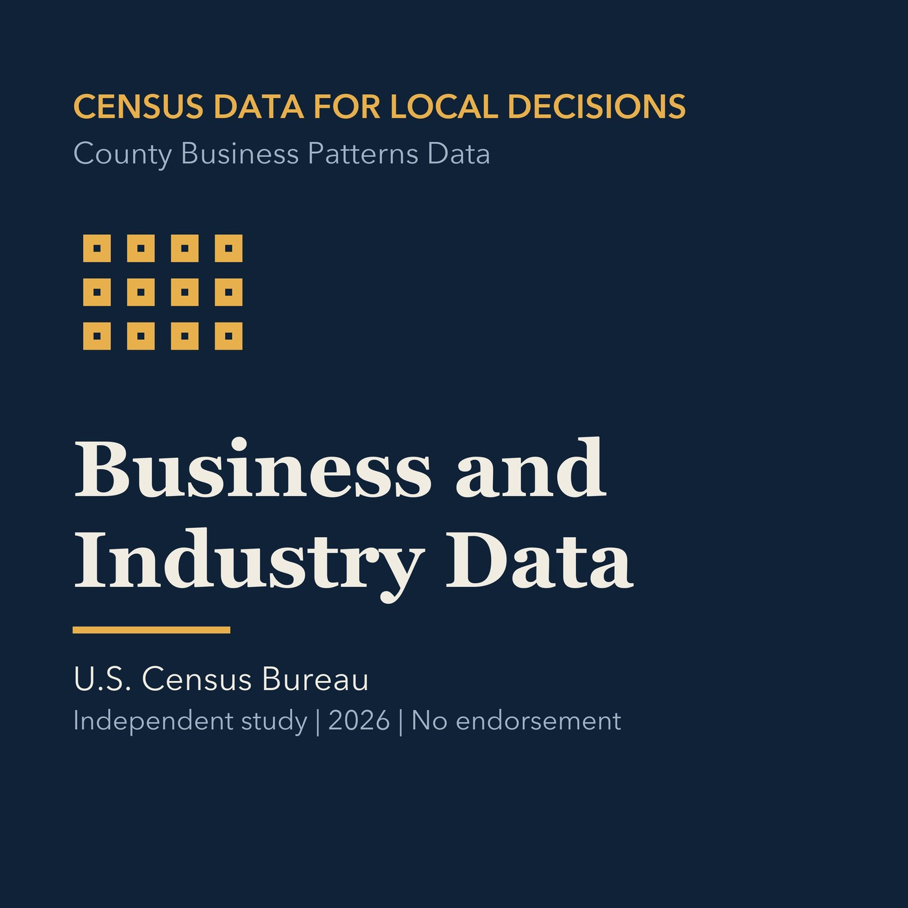

EPISODE 10
Business and Industry Data
Pairs demographic context with business establishments and industry statistics.

- Stable GUID
da305e59-415a-58a4-9f2e-c2a9369dafe5- Release
- census-academy-v2026.2
- SHA-256
32faddc0c8f4ce82fe976ff9c57ba893c68c1fe25cb638baa1bd368e8fc0e83c